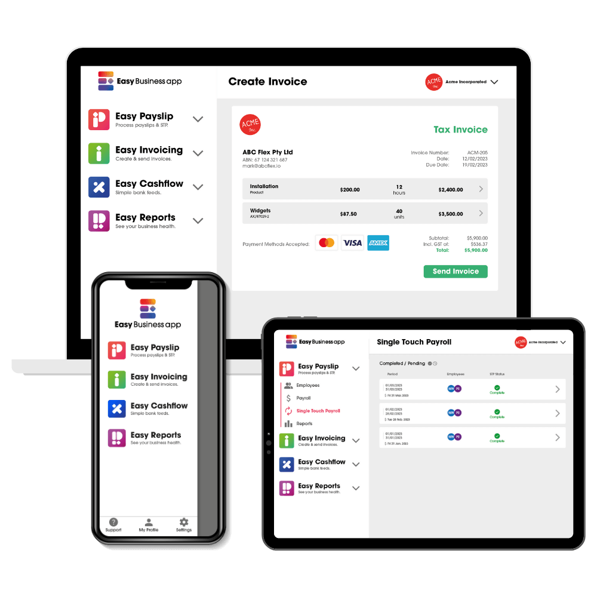

For accountants and bookkeepers
Easy Business App is purpose-built and priced for micro and small businesses, the four-employees-or-fewer clients that most software is too big, too complex and too dear for. Every module they need, real human support, and clients who genuinely use it.
Start with payroll
Payroll is the module advisors least expect a small business app to handle well. Easy Business App does it properly, built for small teams and compliant with the ATO.
Payroll for four employees is $14.95 a month.

The full toolkit
Pay only for the modules your clients use. Reports are always free, and most modules start from $10.95 a month.
Run pays and report to the ATO with Single Touch Payroll, built in.
From $14.95 a monthPay employee super at the same time as wages.
With payrollCreate and send quotes and invoices from your phone or desktop.
Free tier or $10.95 a monthBring in bank transactions and reconcile without the busywork.
Free tier or $10.95 a monthSnap a receipt and let the app read and file the details.
Keep track of what is owed and what is due, in one place.
Profit and loss, BAS and balance sheet, ready when you are.
Always freePay only for the modules you use, and it is typically much cheaper than the usual alternatives.
Why it fits your clients
Micro and small businesses get pushed onto tools that are too big, too complex and too expensive for the size of their business. Easy Business App is built and priced for four-employees-or-fewer businesses, so it fits the way your clients actually work.
For your practice
When clients love their software, they use it. That means better quality data, less chasing, and a smoother run into BAS and tax time.
Clients who enjoy the software keep it current, so you are not rebuilding their books at BAS time.
Fewer missing receipts and late records, because the app is easy enough for clients to stay on top of.
A real person at Easy Business App who knows you and your clients.
Manage every client from one place, not a dozen separate logins.
What clients say
See Easy Business App end to end, payroll included, before you put your name to it.
Book a demo